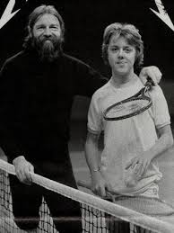
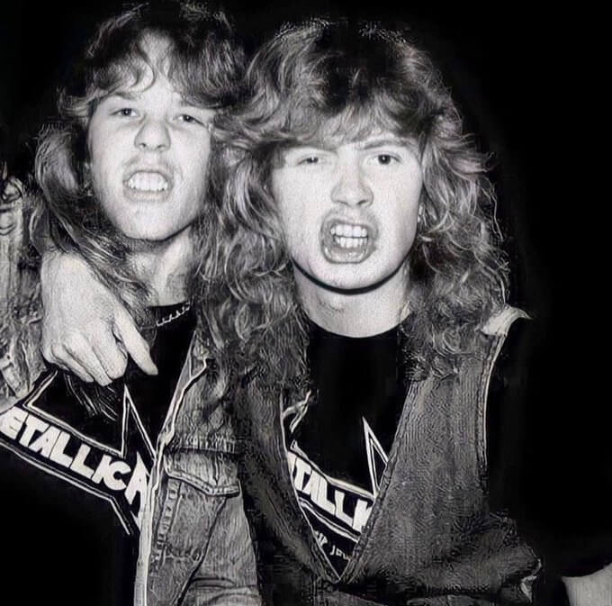
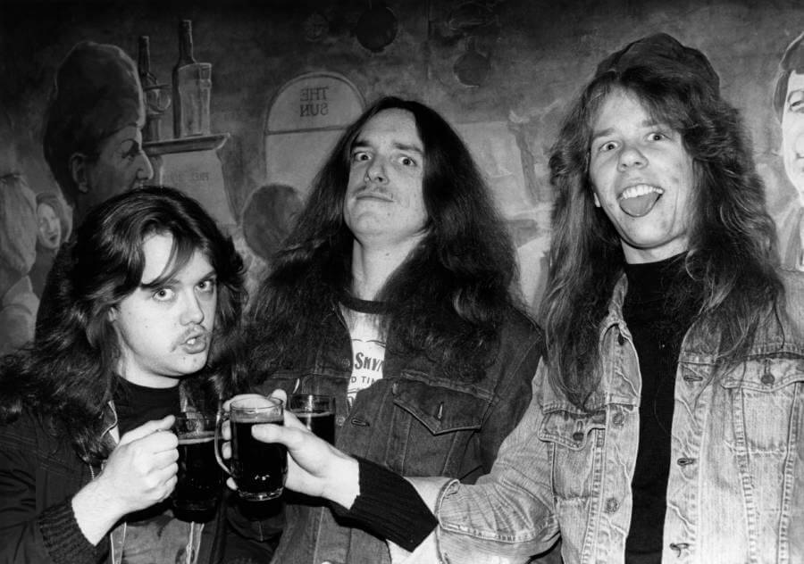
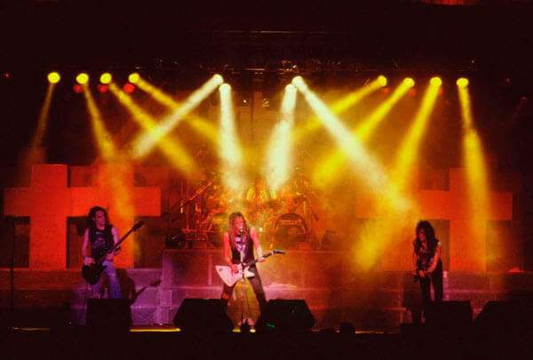

El comienzo del thrash
Afinando las guitarras...
A principios de los años 80’ nacería Metallica, una de las bandas metaleras más innovadoras, populares e influyentes de la historia, que gracias a un agresivo sonido nacido de una soberbia ejecución vocal e instrumental y una gran singularidad compositiva se convirtió en esa década en la punta de lanza más incisiva del thrash metal, un agresivo y contundente subgénero del heavy metal caracterizado por imaginativos, rápidos y cortantes riffs de guitarras y una acelerada percusión, y que nació como respuesta de los metaleros más duros contra el metal más comercial de los años 80′, ejecutado especialmente por las llamadas bandas de glam metal
The four horsemen...
La historia de Metallica, que gracias a cuatro discos imprescindibles lanzados entre 1983 y 1988 redefinieron el subgénero del thrash metal, comenzó en 1980 cuando el adolescente danés Lars Ulrich se trasladó con su familia a la ciudad norteamericana de Los Ángeles. Hijo del tenista profesional Torben Ulrich, se suponía que el joven Lars seguiría sus pasos empuñando una raqueta, pero en realidad estaba más interesado en la música, en especial en los poderosos sonidos de los grupos británicos de la llamada Nueva Ola del Heavy Metal, surgidos a finales de la década de los 70, como Diamond Head, Saxxon, Iron Maiden, Angel Witch, Motörhead y Judas Priest. “Yo en Dinamarca era alguien y llegué a ser ser considerado uno de los 10 tenistas jóvenes más prometedores del país, pero al llegar a América la música de esos grupos me impactó sobremanera, así que lo único que quería era formar un grupo para componer y tocar mi propia música”, recordaría Lars Ulrich.
My friend of misery...
En 1981, Lars Ulrich, de 17 años, publicó un anuncio en la revista “Recycler”, en el que solicitaba un guitarrista para formar una banda con influencias de algunas de sus bandas inglesas metaleras preferidas. El joven y rubio guitarrista James Hetfield, de la misma edad, hijo de un propietario de una compañía de camiones y de una cantante de ópera que habían educado a sus hijos en la Ciencia Cristiana, respondió de inmediato a su anuncio. Comenzaron a ensayar juntos y, aunque al principio a Hetfield no le convencía la forma de tocar de Ulrich, finalmente formaron una banda cuyo sonido poco tenían que ver con el de los grupos de pop-metal y glam-metal que dominaban el panorama en Los Ángeles. Para completar la primera formación de Metallica se añadió en principio al guitarrista líder Lloyd Grand y el bajista Ron McGovney.
We never quit 'cause you're Metallica...
El famoso y pegajoso nombre del grupo sería idea de un amigo de Lars Ulrich, llamado Ron Quintana, quien deseaba publicar un fanzine de música metalera y aunque no sabía cómo llamar a su revista, había barajado los nombres “Metalmania” y “Metallica” como posibles nombres, aunque se inclinaba más por el segundo. A Lars Ulrich le gustó tanto el nombre “Metallica” que rápida y astutamente le recomendó a Quintana que llamara “Metalmania” a su fanzine. Así, la banda de Ulrich y Hetfield se apropió del nombre que los haría famosos en todo el mundo: Metallica. James Hetfield recordó que “por esa época queríamos que en el escenario nos prestaran atención, así que en el escenario tocábamos mas fuerte y rápido que nadie”, mientras que Quintana relató que “en ese entonces todos querían un sonido más horrible, fuerte, rápido y aterrador. Una música que molestara a la gente y la asustara”.
Sexo, drogas y thrash metal...
Después que Lloyd Grand fuera reemplazado por el guitarrista Dave Mustaine en la guitarra líder, Metallica grabaría en 1981 la canción “Hit the lights”, considerada una de los primeros temas del thrash metal, para el disco recopilatorio “Metal Massacre”. Poco después, en julio de 1982, la banda grabaría su primer demo titulado “No Life ‘til Leather” (primera estrofa de la canción “Hit the Lights”). Por esa época comenzarían a aparecer los primeros problemas con el guitarrista Dave Mustaine, dueño de un carácter extremadamente violento producto del consumo extremo de alcohol y drogas. Aún con Mustaine y McGovney en sus filas, Metallica grabaría en noviembre de 1982 el demo en directo “Live Metal Up Your Ass”, estrenando el tema “Whiplash”, inédito hasta entonces. Durante este concierto fueron teloneados por la banda Exodus, cuyo guitarrista líder, Kirk Hammet, exhibió un virtuosismo con este instrumento que dejó impresionados a James Hetfield y Lars Ulrich, quienes ante los crecientes problemas con Dave Mustaine comenzaron a considerarlo como un reemplazo perfecto. Kirk Hammet, por su parte, recordaría que “la primera vez que vi a Metallica en el escenario no podía creer lo que estaba viendo. Era la banda más original, pesada y rápida que yo había visto en mi vida”.
Cliff hace historia...
Al poco tiempo Ron McGovney decidió dejar Metallica al enterarse que Ulrich y Hetfield le habían ofrecido su puesto a Cliff Burton, el dotado bajista del grupo Trauma, quien solía tocar su instrumento con los dedos mientras hacía “headbanging” (mover la cabeza en forma frenética al ritmo de la música). Lars Ulrich contaría “que cuando nos quedamos sin bajista y le pregunté a mi amigo Brian Slagel si podía ayudarme, él me dijo que fuera a ver al bajista de un grupo que se llamaba Trauma; cuando los vi quedé boquiabierto cuando vi a Cliff Burton en el escenario. Nunca había conocido a alguien que tocara así”. Scott Ian, integrante del grupo metalero Anthrax, agregó que “nadie movía la cabeza como Cliff Burton cuando estaba tocando. Recuerdo que la primera vez que lo vi les dije a mis amigos “Oh, Dios…miren a ese sujeto”.
Gimme fuel, gimme fire gimme that I desire...
Cliff Burton decidió dejar Trauma y pasarse a las filas de Metallica con una sola condición: la banda debía trasladarse a la ciudad de San Francisco, donde los nuevos sonidos relacionados con el thrash metal comenzaban a generar una legión de seguidores que recibió el nombre de “Bay Area Bangers”. En cualquier caso, Hetfield, Ulrich y Mustaine ya estaban pensando en mudarse a San Francisco. “Los Ángeles nunca nos trató bien. Así que nos mudamos con mucho gusto a San Francisco en 1982”, relató el guitarrista James Hetfield, quien al igual que sus compañeros habían observado la energía y el entusiasmo de la escena thrash de esa ciudad, que contrastaba con la escena musical metalera de Los Ángeles, que estaba dominada por el cada vez más famoso glam metal, con bandas como Mötley Crüe y Ratt. “Ellos hacían una música más sensual para atraer a las chicas, pero con nuestra música nosotros queríamos dominar el mundo”, recordaría el guitarrista Dave Mustaine, quien tras ser expulsado de Metallica tiempo después formaría la banda Megadeth.
Metal militia...
En San Francisco Metallica consiguió una gran legión de seguidores gracias a su famoso demo que viajaba a todas partes y a sus estridentes actuaciones en directo, logrando llamar la atención de un promotor y dueño de una disquería llamado Johnny Zuzula. Éste, al quedar impresionado tras escuchar el demo de Metallica, los contactó con el sello independiente Megaforce, que sólo les solicitó un único requisito para grabar un disco: Metallica debía trasladarse a la costa este del país, concretamente a la ciudad de Nueva York. Zuzula, dueño de la disquería “El cielo del rock and roll”, se ofreció a representar al grupo, recordando que “Metallica fue la respuesta a las oraciones de los norteamericanos. Era la única banda de la época que hacía ver bien a Estados Unidos”.
Mustaine fuera... Nace Megadeth
Metallica, tras llegar a Nueva York, se alojó en un insalubre departamento ubicado en el barrio de Queens donde solía ensayar la banda Anthrax y donde apenas tenían alimentos para comer. “El mejor día podíamos ir al Mc Donald a almorzar y el peor teníamos sólo una salchicha en la mano, porque no teníamos dinero para comprar pan”, recordaría Lars Ulrich. A los 10 días después de su llegada, la situación con Dave Mustaine se hizo insostenible, así que Lars Ulrich y James Hetfield decidieron expulsarlo del grupo. “Nos levantamos muy temprano, despertamos a Dave Mustaine, quien todavía estaba enrollado en su saco de dormir y le dijimos: “Estás fuera de la banda”,”, recordaría Hetfield, mientras que Lars agregó que “le dije a Dave: “vas a pasar las siguientes 48 horas en un bus Greyhound, así que empaca tus cosas porque tu bus sale en 45 minutos”. Así de rápido sucedieron las cosas”. Inmediatamente, Lars Ulrich y James Hetfield contactaron al guitarrista de Exodus, Kirk Hammet, para que se uniera a la banda. Hammet, un aventajado alumno de Joe Satriani y quien introduciría un sonido más melódico, técnico y estilizado en Metallica, relató que “cuando llegué a su departamento en Nueva York eran las seis de la tarde y todos estaban durmiendo. Yo me dije “esto es muy al estilo del rock and roll”, así que fue un buen augurio”, mientras que James Hetfiel recordó que “la primera canción que tocamos con Kirk fue “Seek and destroy” y Kirk hizo un solo de guitarra que nos demostró que las cosas iban a funcionar muy bien”.
“Kill’em all...
Ya con su formación definitiva (Lars Ulrich, James Hetfield, Cliff Burton y Kirk Hammet), Metallica grabaría en mayo de 1983 su álbum debut, “Kill’em all”, poderoso y notable disco que asentó las bases del thrash metal, cargado de velocidad y solos de guitarra arrolladores, crudo, ecléctico y que no planteaba compromisos con nada ni con nadie, convirtiéndose en una influencia decisiva para bandas como Slayer o Exodus.
Seek and destroy...
Con la producción de Paul Curcio, el tracklisting del disco era prácticamente el mismo que el del demo “No Life ’til Leather”, incluyendo como novedades el tema “Whiplash”, canción que era antecedida por el solo de bajo que Cliff Burton solía ejecutar en los conciertos, bajo el nombre de “(Anesthesia) Pulling Teeth”. Además, se incluyó una lograda versión remozada del tema “The Mechanix”, añadiendo nuevos riffs y rebautizándolo como “The Four Horsemen”. El abrasivo y metalero sonido de esta canción, junto a otros temas como “Phantom Lord”, “Seek & Destroy” y “Metal Militia”, ejemplificaron a la perfección la potente sonoridad thrash y las resonancias más ásperas y frenéticas derivadas de la evidente habilidad instrumental de los cuatro integrantes del grupo.
Ride the lightning...
El disco “Kill ‘Em All” llegaría a vender más de 300 mil copias, obteniendo elogiosas reseñas de la prensa musical, que ya comenzaba a verlos como los estandartes de una nueva corriente en el metal. Dueños de una incipiente y buena reputación, Metallica se iría de gira con el grupo Raven por Estados Unidos para promocionar su disco debut, mientras que en 1984 viajaron a Europa en el marco de la gira europea “Seven Dates of Hell”. Brian Slagel, amigo de la banda, recordaría que “los integrantes de Metallica vivían, respiraban y dormían para el metal y a sus seguidores les pasaba los mismo”. Terminada la gira, Metallica entraría el 20 de febrero de 1984 a los Sweet Silence Studios de Copenhague para la grabación de su segundo álbum, “Ride the Lightning”, disco que supondría un gran cambio en el sonido de la banda, que se adentraba en terrenos mucho más melódicos, evolucionando a un estilo musical más oscuro y depurado, alejándose del primer thrash ruidoso y crudo de “Kill ‘Em All”. Este disco, gracias a la canción homónima y otros temas como “Fight Fire With Fire”, “For Whom The Bells Tolls”, “Creeping Death” o la balada “Fade To Black”, confirmó el talento de Metallica para expandir las estructuras metaleras con nuevas melodías y potentes riffs de guitarras.
“Alcohólica”
En septiembre de 1984 la banda firmó contrato con el sello Elektra e inició una nuevo tour europeo, visitando países como Francia, Alemania, Dinamarca, Suecia, Suiza, Italia, Finlandia e Inglaterra con un enorme éxito de público. Finalizada la gira europea, y tras un descanso por Navidad, Metallica iniciaría en enero de 1985 un tour por Estados Unidos y Canadá junto a Armored Saint y el grupo W.A.S.P. Sería durante esta gira cuando la banda, debido a sus públicos excesos con el alcohol, comenzó a ser conocida como “Alcohólica”.
Metal y vodka...
“Ello nació por nuestro amor por el vodka, porque a diferencia de otras bandas nosotros nos nos drogábamos”, recordaría el baterista Lars Ulrich, mientras que el guitarrista James Hetfiel relató que “por ese tiempo descubrimos un delicioso licor para después de las comidas llamado “Jaegermeister”, que tenía una cantidad de opio y te volvía una persona sumamente agresiva o te hacía cometer locuras como orinar en la barra de un bar”.
Obey your master...
La banda, tras dos años sin pisar un estudio, grabaría en 1986 su tercer disco, “Master of Puppets”, placa que vendería hasta la fecha más de siete millones de copias y confirmaría el status de privilegio del grupo en la escena del thrash metal. Este álbum sería considerado por algunos críticos como uno de los trabajos más importante del thrash metal por su influencia y el desarrollo del género, siendo junto a los discos “Rust in Peace”, “Reign In Blood” y “Among The Living” los cuatro álbumes que le valieron a los grupos Metallica, Megadeth, Slayer y Anthrax, respectivamente, el apodo de “Los cuatro grandes del thrash metal”.
Lashing out the action, returning the reaction...
Canciones como “Leper Messiah”, “Master Of Puppets”, “Battery” o el instrumental “Orion” fueron algunos de los cortes más valiosos de este tercer disco, su álbum más popular hasta la fecha y que los convirtió en los nuevos monarcas del thrash, girando ese mismo año como teloneros del mismísimo Ozzy Osbourne. Ozzy recordaría años más tarde que “Metallica me hizo ganar mucho dinero, porque la gente los adoraba. La mayoría de las noches se robaron el espectáculo. Eran difíciles de vencer”.
Disposable heroes...
En esa época los cuatro integrantes de Metallica se sumergieron en los excesos propios del rock and roll. El baterista Lars Ulrich recordaría que “cuando tienes 22 años lo único que quieres es tener sexo con bellas chicas, emborracharte y vivir todos los excesos de los cuales leíste o escuchaste y de un día para otro, teníamos todo eso frente a nosotros”, mientras que el guitarrista Kirk Hammet recordó que “salíamos del escenario directo a las duchas y allí había un cuarto lleno de chicas. ¿No es eso increíble?”. James Hetfield, por su parte, añadió que “eso pasó muchas veces. baños, duchas, ocho chicas cepillándote a la vez. No me molestaba en lo más mínimo”. La critica musical, por entonces, calificaba a Metallica como “los Led Zeppelin de esta generación”, aludiendo a su pesado pero melodioso sonido, con excelentes discos que eran esperados con ansias por los fans y que contenían notables y agresivas canciones cuyas letras hacían alusión a la ira urbana, la enfermedad mental, las drogas o la violencia política.
The thing that should not be...
Parecía que nada podía frenar el imparable ascenso de Metallica al Olimpo del rock, pero en 1986 la tragedia golpearía con saña a la banda. Durante una gira por Suecia, en la madrugada del 27 de septiembre de ese año, el autobús que llevaba a la banda volcó cerca del pueblo de Ljungby. Kirk Hammett, Lars Ulrich y James Hetfield no sufrieron daños físicos preocupantes, pero el autobús cayó sobre el cuerpo del bajista Cliff Burton, causándole la muerte de forma instantánea. Burton se encontraba durmiendo en una litera y, al volcar el autobús, salió despedido por la ventana, siendo aplastado por el pesado vehículo. Kirk Hammet recordó que “escuché a todos gritando, menos a Cliff y pensé: “Dios, algo está mal”; cuando salí afuera vi las piernas de Cliff que sobresalían por debajo del autobús. Después de aquello quedé en estado de shock y no recuerdo nada de las cuatro horas siguientes”.
Jason Newsted dentro de las filas
Según el conductor, el autobús había derrapado debido a unas supuestas placas de hielo que había en la carretera, lo que ocasionó el vuelco; James Hetfield, fuera de sí por lo sucedido, intentó golpear al conductor, siendo detenido por sus compañeros. Posteriormente recorrió a pie una distancia considerable de la carretera buscando las placas de hielo, pero no encontró nada, lo que acrecentó aún más su furia contra el conductor. La trágica muerte de Cliff Burton, de escasos 24 años y una de las piezas clave en el sonido y éxito de Metallica, provocó la suspensión de la gira europea y la retirada de los tres miembros restantes para pensar qué les deparaba el futuro. Finalmente, después de hacer interminables audiciones donde escucharon a cientos de bajistas, decidieron continuar con la carrera musical de la banda, reclutando al joven bajista Jason Newsted, de la banda Flotsam and Jetsam, para reemplazar a Cliff Burton.
Pagando derecho de piso...
Kirk Hammet recordaría que “lamentablemente, no le hicimos la vida nada fácil a Jason y él se convirtió en el chivo expiatorio de la tristeza y rabia que sentíamos por la muerte de Cliff. En las giras le decíamos a la gente que era homosexual, que tenía Sida o a veces le hacíamos pesadas bromas, como pedir tragos para todos en un bar para cargarle la cuenta a él, pero Jason soportó todo estoicamente, pasando por esta especie de campo minado que habíamos creado, hasta que se convirtió en uno de nosotros”.
And justice for all..
En 1987 Metallica lanzaría un álbum de versiones de algunas de sus bandas favoritas titulado “Garage Days Re-Revisited”. Un año después y todavía lamentando el fallecimiento de Cliff Burton, Metallica encontró la forma de exteriorizar su pena, ira y frustración en el estudio de grabación, lanzando su cuarto álbum de estudio, “…And Justice for All”, considerado uno de sus álbumes más oscuros, con un sonido de gran complejidad, dominado por ritmos de batería densos y muy acelerados.
To live is to die...
Canciones como “Eye of the beholder”, “Blackened”, “…And justice for all”, “To live is to die” (dedicado a Cliff Burton, basándose en los bocetos de una canción que se encontraba componiendo) llamaron la atención no sólo por su música, sino que también por sus letras cercanas a la crítica social y política, que anunciaban una suerte de muerte del sueño americano. El disco también contenía la poderosa balada “One”, que se transformaría en el primer tema de Metallica en ser programado en los programas de videos musicales como MTV y en las radios regulares, aumentando notoriamente la popularidad del grupo.
And the Earth becomes my throne...
El álbum “…And justice for all” vendería hasta la fecha más de 8 millones de copias y gracias a él Metallica recibiría su primera nominación a los premios Grammy en 1989, en la categoría de Mejor Interpretación Vocal o Instrumental de Hard Rock/Metal. Terminados los años 80’, cuando los integrantes de Metallica se transformaron en los reyes absolutos del thrash metal, el grupo entraría en la década de los 90′ en una nueva etapa, más cercana al mainstream musical, sobre todo gracias al suceso mundial que supuso el disco “Black Album”, de 1991, producido por Bob Rock, que mostró un sonido menos vertiginoso y más accesible que sus primeras propuestas, alcanzando el número 1 en el Billboard gracias a temas como “Enter Sandman”, “Nothing else matters”, “The Unforgiven” o “Wherever I May Roam”.
En busca de nuevos horizontes...
Convertidos ya en megaestrellas, y tras una larga gira, Metallica lanzaría en los años siguientes los discos “Load” (1996) y Reload” (1997), discos que aproximaron al grupo a las tendencias del Hard Rock y del rock alternativo, abandonando la dureza de sus antiguas composiciones. Por esa época, el grupo tuvo un agresivo cambio de imagen, que no cayó nada de bien en sus fans más recalcitrantes, quienes no se identificaron para nada con sus cortes de pelo y vestimentas más acicaladas. “Muchos nos trataron de vendidos. En una de las fotos de esos discos parecíamos proxenetas cubanos, bebiendo martinis, y fumando con nuestros nuevos cortes de cabello y trajes, pero ya estábamos mayores y teníamos que evolucionar. Siempre espero al presente y le digo bienvenido, ven con todo lo que tienes”, diría con humor el baterista Lars Ulrich.
Nacer, crecer, Metallica, morir...
Después de lanzar en 1999 un álbum grabado en directo junto a la Orquesta Sinfónica de San Francisco, protagonizar polémicas en torno a la descarga de música en Internet -contra la que Metallica había combatido desaforadamente- y la adicción al alcohol de James Hetfield, de la que finalmente terminó recuperándose, el grupo sufrió el año 2001 el abandono del bajista Jason Newsted, siendo reemplazado por el bajista de origen mexicano Robert Trujillo. La nueva formación de Metallica grabaría en los siguientes años los discos “St. Anger” (2003), “Death Magnetic” (2008, disco con producción de Rick Rubin con el que pretendieron regresar al sonido de sus discos de los años 80′ con largas y épicas composiciones) y “Hardwired… To Self-Destruct” (2016).
El sueño hecho realidad!
Metallica, con más de 35 años de carrera y más de 120 millones de discos vendidos, ingresaría el año 2009 al salón de la fama del Rock and Roll, el mínimo honor que se le podía hacer a un grupo que revolucionó los años 80′ gracias a su furiosa y potente sonoridad thrash, transformándose en una de las bandas mas señeras, influyentes y peligrosas de esa década.